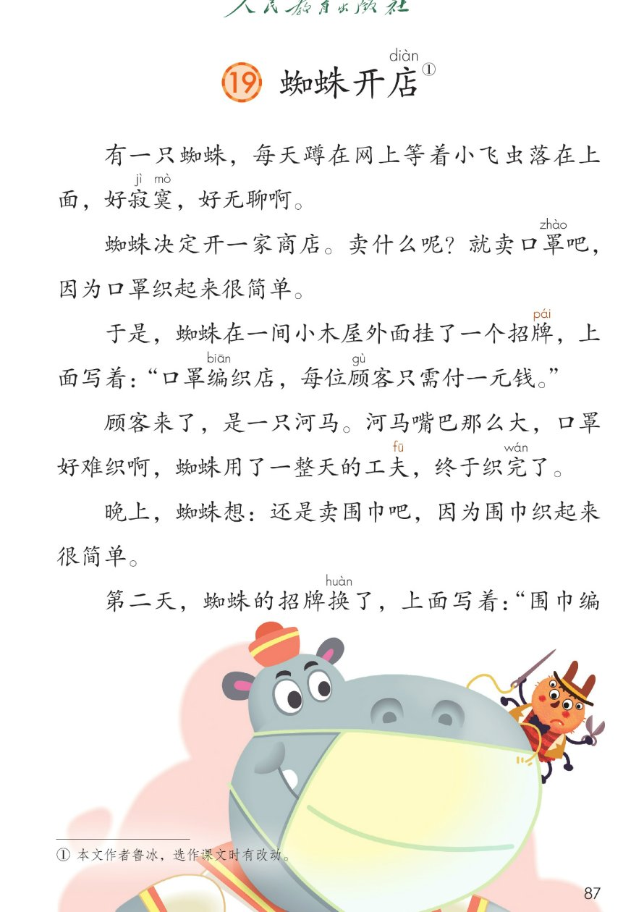
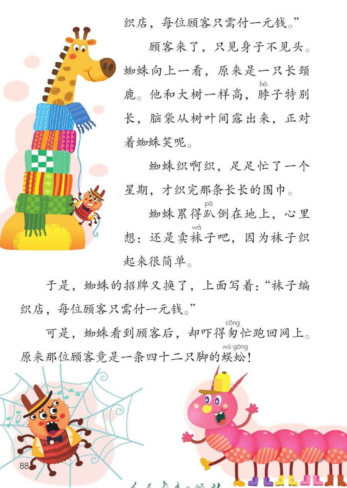
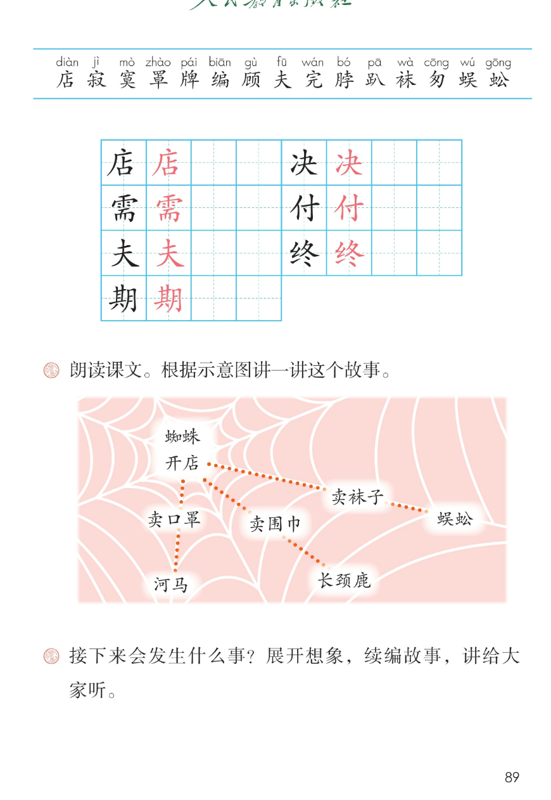

×
🔊 手机听不到声音怎么办？
① 先把手机
媒体音量调大 ，确认没开静音、没连蓝牙耳机；在微信里打开的，点右上角「⋯ → 用浏览器打开」。
② 还是没声音？到应用商店免费下载
Microsoft Edge 浏览器 （它自带朗读发声），用它打开本页面就能出声。
③ 换了 Edge 仍然没声音，说明这部手机的
硬件/系统不支持 网页朗读（多为老旧机型）；近几年买的新手机一般都能正常播放。
→ 打开声音自检
🕷️ 第 19 课《蜘蛛开店》· 有声图文带读
统编版语文 · 第七单元·阅读 · 课本 第 87~89 页 · 作者：鲁冰
课文 11 段 · 共 17 句
会认字 15
会写字 7
听写词 10
近义词 4 组
深入理解 8 题
本课本领 朗读·看图讲故事·续编
🎧 五步学（可随时点任意一句、一个字、一个词单独听）： ① 听读课文 ——幽默故事，一句一句读，读到哪一句哪一句发光；开「跟读」后读完一句留时间让你自己读。② 学字词 ——15 个会认字、7 个会写字（含书写提示），点一个读一个。③ 词语·听写·造句 ——先读故事词语积累，再听写 10 个词（读两遍→你写→报答案→听示范句），最后听 4 组近义词辨析。④ 深入理解 ——8 道题（认知 / 理解 / 运用 / 拓展），开放题答案不唯一，先想后看。⑤ 分节朗读·想象画面 ——按五步理清蜘蛛开店的过程，再听五位朗读者分组读这个故事。
📚 第七单元·阅读（本课定位）： 第18课《大象的耳朵》 → 第19课《蜘蛛开店》 → 第20课《青蛙卖泥塘》 → 第21课《小毛虫》 → 语文园地七
点段前的 ①~⑪ 听整段
🔁 跟读模式：关
👁 隐藏注音（自测用）
注音只标本课要认、要写的字和课本明确标了音的字，读音来自课本第 89 页生字表
🎤 朗读要求（老师标准） 店 读第四声，寂 读第四声，寞 读第四声，罩 读第四声，牌 读第二声，编 读第一声，顾 读第四声，付 读第四声，完 读第二声，脖 读第二声，趴 读第一声，袜 读第四声，匆 读第一声，蜈 读第二声，蚣 读第一声；不添字、不漏字 ：逗号停得短，句号停得长，一句一句读清楚；读出故事的趣味 ：卖什么呢读出自问自答，好难织啊读出发愁，竟是一条四十二只脚的蜈蚣读出吃惊；招牌读得清楚 ：像真的站在小木屋外面念招牌。
①
有一只蜘蛛，每天蹲在网上等着小飞虫落在上面，好寂jì 寞mò ，好无聊啊。
②
蜘蛛决定开一家商店diàn 。
卖什么呢？
就卖口罩zhào 吧，因为口罩zhào 织起来很简单。
③
于是，蜘蛛在一间小木屋外面挂了一个招牌pái ，上面写着：“口罩zhào 编biān 织店diàn ，每位顾gù 客只需付fù 一元钱。”
④
顾gù 客来了，是一只河马。河马嘴巴那么大，口罩zhào 好难织啊，蜘蛛用了一整天的工夫，终于织完wán 了。
⑤
晚上，蜘蛛想：还是卖围巾吧，因为围巾织起来很简单。
⑥
第二天，蜘蛛的招牌pái 换了，上面写着：“围巾编biān 织店diàn ，每位顾gù 客只需付fù 一元钱。”
⑦
顾gù 客来了，只见身子不见头。蜘蛛向上一看，原来是一只长颈鹿。
他和大树一样高，脖bó 子特别长，脑袋从树叶间露出来，正对着蜘蛛笑呢。
⑧
蜘蛛织啊织，足足忙了一个星期，才织完wán 那条长长的围巾。
⑨
蜘蛛累得趴pā 倒在地上，心里想：还是卖袜wà 子吧，因为袜wà 子织起来很简单。
⑩
于是，蜘蛛的招牌pái 又换了，上面写着：“袜wà 子编biān 织店diàn ，每位顾gù 客只需付fù 一元钱。”
⑪
可是，蜘蛛看到顾gù 客后，却吓得匆cōng 忙跑回网上。
原来那位顾gù 客竟是一条四十二只脚的蜈wú 蚣gōng ！
🤔 想一想（点我可跳过）
点一张图，听读整页

第 87 页 · 课文第 1~6 段

第 88 页 · 课文第 7~11 段

第 89 页 · 生字表·示意图·课后题
📖 人教版《语文》二年级下册 · 课本第 87~89 页 · 图片仅供个人学习，版权归人民教育出版社所有
点一个字，听读音、词语和课文里的句子
结构、部首、笔画与书写提示为通用规范，供参考，以教材和老师的指导为准
店
diàn
商店 · 店主
8 画 · 半包围（广）
广字头写宽，占字写稳
决
jué
决定 · 决心
6 画 · 左右（冫）
两点水写窄，夬字写稳
需
xū
需要 · 必需
14 画 · 上下（雨）
雨字头写宽，而字写稳
付
fù
付钱 · 交付
5 画 · 左右（亻）
单人旁写窄，寸字写正
夫
fū
工夫 · 农夫
4 画 · 独体
两横写平，撇捺舒展
终
zhōng
终于 · 终点
8 画 · 左右（纟）
绞丝旁写窄，冬字写稳
期
qī
星期 · 日期
12 画 · 左右（月）
左宽右窄，月字写瘦长
点一行，听词语和课后题的答案
📖 课后题（课本第 89 页照录） ：① 朗读课文。根据示意图讲一讲这个故事（蜘蛛开店 → 卖口罩·河马 / 卖围巾·长颈鹿 / 卖袜子·蜈蚣）。 ② 接下来会发生什么事？展开想象，续编故事，讲给大家听。
寂寞 寂寞 孤单
招牌 招牌 牌子
工夫 工夫 时间
足足 足足 整整
读两遍 → 你在纸上写 → 报答案 → 听示范句
准备听写 · 共 10 个词
○ ○ ○
点下面的「开始听写」，听到一个词就写一个词。
▶ 开始听写
🔁 再读一遍
👁 看答案
点词听读，点句子听示范句，再自己说一句
1 商店 会写字 · 店
示范句：蜘蛛决定开一家商店。
✏️ 我也能说：什么商店
2 决定 会写字 · 决
示范句：蜘蛛决定卖口罩。
✏️ 我也能说：谁决定做什么
3 需要 会写字 · 需
示范句：织口罩只需要一元钱。
✏️ 我也能说：什么需要什么
4 付钱 会写字 · 付
示范句：每位顾客只需付一元钱。
✏️ 我也能说：谁付钱买什么
5 工夫 会写字 · 夫
示范句：蜘蛛用了一整天的工夫。
✏️ 我也能说：花了什么工夫
6 终于 会写字 · 终
示范句：蜘蛛终于织完了口罩。
✏️ 我也能说：终于做成什么
7 星期 会写字 · 期
示范句：蜘蛛足足忙了一个星期。
✏️ 我也能说：一个星期做什么
8 口罩 课文词 · 罩
示范句：蜘蛛的商店卖口罩。
✏️ 我也能说：什么样的口罩
9 招牌 课文词 · 牌
示范句：蜘蛛挂了一个招牌。
✏️ 我也能说：什么样的招牌
10 蜈蚣 课文词 · 蜈
示范句：那位顾客竟是一条蜈蚣。
✏️ 我也能说：蜈蚣怎么样
相同点 / 不一样在哪 / 各造一句
寂寞 — 孤单
相同：都表示一个人、冷清 。
不一样：寂寞 是心里冷清、没意思；孤单 是身边没有人陪伴。
寂寞：一个人在家真寂寞。
简单 — 容易
相同：都表示不难 。
不一样：简单 说东西、做法不复杂；容易 说做起来不费力。
简单：口罩织起来很简单。
匆忙 — 急忙
相同：都表示急急急忙忙 。
不一样：匆忙 多写走路、做事慌忙；急忙 多写心里一急马上行动。
匆忙：他匆忙跑回网上。
决定 — 确定
相同：都表示拿定了主意 。
不一样：决定 是对怎么办打定主意；确定 是把情况弄清楚、定下来。
决定：蜘蛛决定开商店。
卖什么呢？（自问自答） 卖什么呢？就卖口罩吧
因为…（说原因） 就卖口罩吧，因为口罩织起来很简单
织啊织（动词重叠） 蜘蛛织啊织，足足忙了一个星期
一整天 / 一个星期 用了一整天的工夫 / 足足忙了一个星期
标「答案不唯一」的题，说得有道理都对
认知 蜘蛛开了几次店？都卖什么？顾客分别是谁？看解析
🤔 想一想
解析：
卖口罩，顾客河马
卖围巾，顾客长颈鹿
卖袜子，顾客蜈蚣
认知 蜘蛛为什么决定开店？最后为什么跑回网上？看解析
🤔 想一想
解析：
寂寞、无聊
四十二只脚的蜈蚣
吓得跑回网上
理解 为什么卖口罩给河马很困难？看解析
🤔 想一想
解析：
口罩织起来很简单
河马嘴巴大，难织
用了一整天的工夫
理解 为什么卖围巾给长颈鹿也很困难？看解析
🤔 想一想
解析：
和大树一样高，脖子特别长
足足一个星期
趴倒在地上
理解 三次开店的招牌有什么相同和不同？你觉得蜘蛛的问题出在哪？看解析
🤔 想一想
解析：
编织店，只需付一元钱
口罩、围巾、袜子换了三次
只想图简单，不看顾客
运用 用“终于”说一句话。看解析
🤔 想一想
解析：
经过努力终于做到
学会、做完都可以
🌈 答案不唯一，说得有道理都对
运用 根据示意图，用上“先……接着……最后……”讲一讲这个故事。看解析
🤔 想一想
解析：
先、接着、最后
卖什么、顾客是谁、结果怎样
🌈 答案不唯一，说得有道理都对
拓展 接下来会发生什么事？展开想象，续编故事。看解析
🤔 想一想
解析：
卖什么、来什么顾客
可以学课文的样子写
🌈 答案不唯一，说得有道理都对
点一步，听这一步
💬 想象支架：先 想寂寞的蜘蛛 → 再 想卖口罩来河马 → 接着 想卖围巾来长颈鹿 → 然后 想卖袜子 → 最后 想蜈蚣来了吓得跑回网上。
点一张卡，听这一节的句子
🌈 卖口罩·河马来了
卖口罩·河马来了
💬 自问自答轻快，织时发愁
🌈 卖围巾·长颈鹿来了
卖围巾·长颈鹿来了
💬 长颈鹿读得夸张，织时读得慢
🌈 卖袜子·招牌又换了
卖袜子·招牌又换了
💬 读得轻快，像这次真没问题
🌈 吓跑回网上
吓跑回网上
💬 读得又快又慌，吃惊